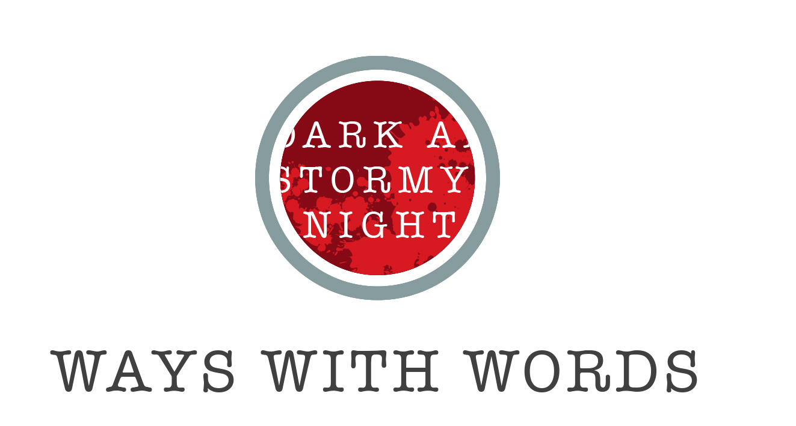

Cover
Contents
[toc]
Previous
Next
Crime Fiction Fix

Ways with words
Share this article
Tweet
<
Previous Article
Expert insights
>
Next Article
Members' showcase
Twitter
Tweet this article
Tweet
Follow us on Twitter
Follow @@ThrillerSchool
x
Facebook
Like this article
Become a fan
x